By Elizabeth Dunlop Richter
Chicago Scots’ 179th annual St. Andrew’s Day Gala, the oldest black-tie charity event in Illinois, is known as the Feast of the Haggis, but it is not only about the famous Scottish dish. It’s also a celebration of the festive garments worn by most attendees. Inside a Ralph Lauren showroom or at a bagpipe competition, one will seldom find so many colorful tartans in one place. Whether seen on gentlemen wearing dashing kilts or ladies in skirts, scarves, and shawls, tartans reign.
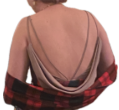 |
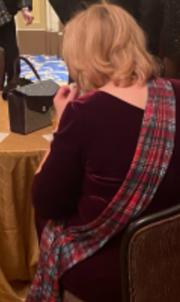 |
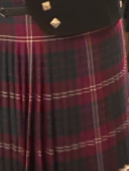 |
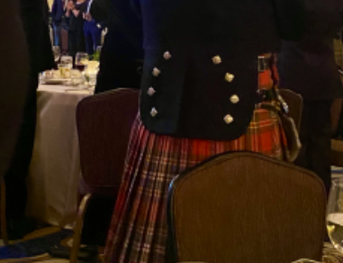
A tartan is not the same thing as a plaid. A tartan, in the common definition, is “a kind of woolen cloth woven in stripes of various colors crossing at right angles to form a regular pattern… It is customary for the pattern to be symmetrical.” (Highland Clans and Tartans, R.W. Munro) In the U.S. a tartan can be called a plaid, but a plaid can be any checked cloth.
The tartan as a design element dates back to ancient China, making appearances sporadically in various eras and countries but it was not associated with Scotland until the 16th century, initially, associated with districts in Scotland. Tartans were gradually attached to families by the 18th century. Tartans had been adopted by various Jacobite Highland military units in the 1745 Battle of Culloden. The ruling British government decisively defeated the Scots, ending the Jacobite rebellion. Among other laws to try to integrate Scotland, the wearing of tartans (Highland dress) was banned, except for officers, British soldiers and eventually, landed gentry and sons.
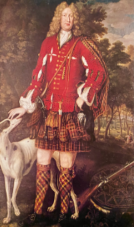
Kenneth Sutherland, third Lord Duffus
Photo: Highland Clans and Tartans, R. W. Munro
By the time the law was repealed in 1782, 37 years later, tartan had become more widely adopted throughout Scotland despite the ban. When King George IV wore tartan to Scotland in 1822, it became more acceptable. Since then, tartans have had their ups and downs politically, socially, and fashion-wise evidenced by dozens of books on the subject. Queen Victoria’s passion for tartan influenced the rebuilding of the Scottish Balmoral castle with its tartan themed décor and created a tartan frenzy. Manufacturers of tartan fabric quickly developed a major role in tartan’s popularity.
Photo: Lochcarron of Scotland
Today, it’s hard to trace many tartans earlier than the Battle of Culloden. Additionally, new tartans can relatively easily be created. Today there are an estimated 3500 to 7000 individual tartans, associated with government agencies, clans, institutions, and individuals. More appear every day. The state of Illinois, for example, has an official tartan. It was registered in 1951
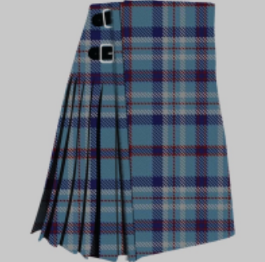
when Scottish Register of Tartans was published. Any Illinois resident may wear this, but many Chicago Scots’ members have their own.
At the Gala, many family tartans were on display. The Melville family, proudly sporting the Edinburg-based Melville tartan at the gala, has made many contributions of time and treasure to Chicago Scots. Parents Catherine and Paul were honored at the gala as this year’s Kinsman and Kinswoman for their service as volunteers and donors. As chairman of the Board of Governors of Chicago Scots, Paul led its assisted living facility, Caledonia Senior Living, through Covid with its plan that resulted in no lives lost during the pandemic. Scottish by birth, Paul moved to Chicago for his role at Grant Thornton, with his wife and sons. Catherine, a native of England, too has Scottish roots and wore a McGregor tartan before she married Paul.
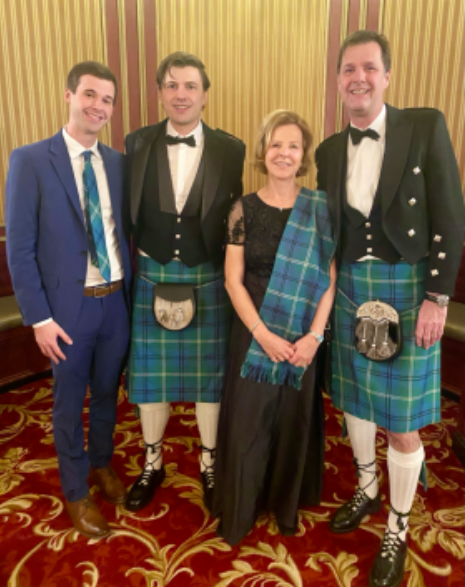
The Melville Family wearing the Melville tartan
Catherine is not unusual in being able to choose between two tartans. Ed Rutledge can do the same. He’s wearing the Armstrong tartan, although he has the Rutledge as an option. Throughout Scottish history, clans affiliated with one another, particularly if one was larger than the other. Rutledge points out that “The Armstrongs were the dominant clan in the Scottish borders where my family was from. Eventually the English decided to kill the Rutledges or send them into exile. So they took shelter with the Armstrongs and eventually integrated into the Armstrongs. The border clans were English when it suited, Scottish when it suited. They drove everyone nuts!”
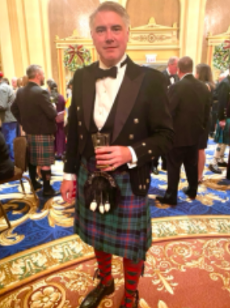
Edward Kirby Rutledge wearing the Armstrong tartan
Will Forrest also has two tartan options, one his own lineage, a Macdonald of Clanranald, and one of his friend’s, an Anderson. “These were made when I was 18 in a kilt shop on Buchanan Street in Glasgow. My best friend and I went to get our kilts made. He had more money than I did and he had these pants made. He literally got too big for his britches, and so his wife made him give me his pants. When I’m too lazy to put on my kilt, I put on my trews (Scottish for trousers). I still have my kilt from when I was 18.”
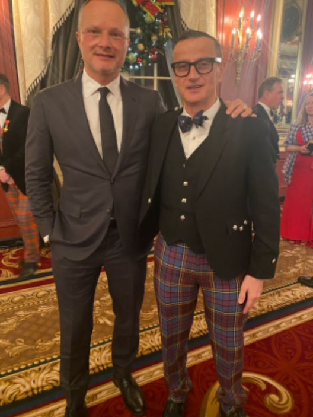
(L to R) Mark Smithe and Will Forrest wearing the Anderson tartan
Violinist Rachel Barton Pine is a regular attendee and frequent performer of the St. Andrew’s Day Gala and happily wears some untraditional tartans. “I actually buy tartans for the stage… when I play Scottish flavored violin concertos in large halls, I need something that has that concert sparkle. My usual tartan is Clan Nordstrom, but tonight I’m wearing one I’m calling Clan Amazon.”
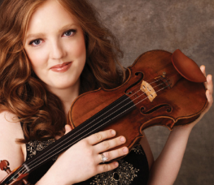 Rachel Barton Pine wearing the Clan Amazon |
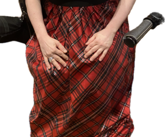 |
Charlie Miller, vice chair of Chicago Scots, wears the McFarland tartan, the Millers being historically part of the McFarland clan. “You had the big clans and a number of other families would join certain clans. I’m very proud because it’s a family tradition. The actual tartan itself can be a little loud so I wear what’s called the ancient McFarland, it’s a little washed out, a little calmer.” Many tartans come in several versions, some called “modern,” others known as “hunting” or “ancient.”
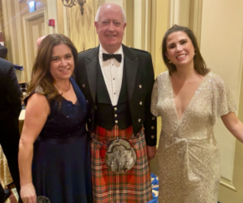
(L to R) Natalia Miller, Charlie Miller, wearing the McFarland tartan, and Susan Pearson
Intensity of color is not a problem for Andrew Novinger and his wife, Anna, who intentionally found a dress to match the purple of the modern Montgomery tartan. “My Mom did a historical family tree,” said Andrew, “and this is what she found… back to the 1600’s… my mom passed away and now [we wear it] honoring what she did.”
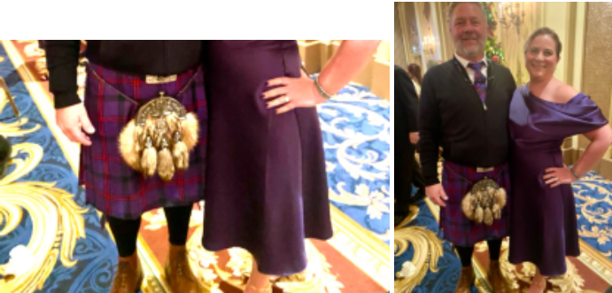
Andrew and Anna Novinger, celebrating the modern Montgomery tartan
David Lee Csicsko, artist in residence at Chicago Scots, has always loved things Scottish, “I’m Scottish by association,” he explained. He was influenced by his parents who spent their honeymoon in Scotland and whose favorite musical is “Brigadoon.” He’s wearing a vintage tartan tie, “Maybe Murray,” he guessed. But the tam-o-shanter is a placeholder for another one. “My Mom bought this amazing, felted wool Scottish tam that sadly disappeared, so I’m trying to find the same one.”
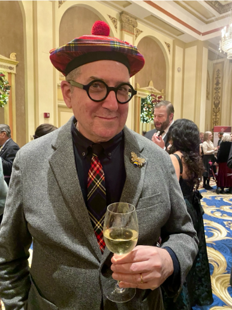
David Csicsko, resident artist with Chicago Scots
Gus Noble, president of Chicago Scots, is seldom seen without a tartan, either that of the state of Illinois or of his family. “Noble is a sept (related clan) of Mackintosh so it’s my family tartan. Wearing Mackintosh connects me to my roots. It’s a symbol of identity and pride. I had the trews (trousers) made last year for my investiture when I received my OBE from His Majesty King Charles III.”
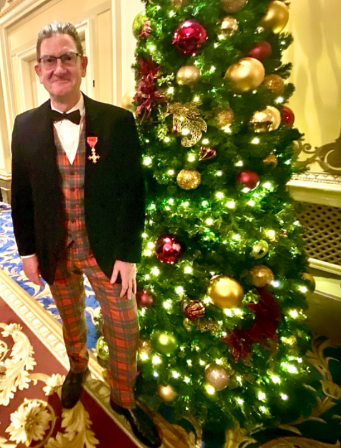
Gus Noble, president of Chicago Scots wearing the Mackintosh tartan
Love of tartans can express itself in so many ways, whether or not one has any Scottish roots. Need a kilt? You can find Scottish and American vendors on the internet, offering ready to wear and custom kilts as well as the accompanying jackets, socks, and shoes. But tartan appeals in many forms besides kilts. The Ben Silver collection, with its store in Charleston and an online catalogue, is just one place for high quality tartans from head to toe.
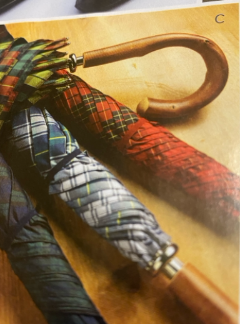 |
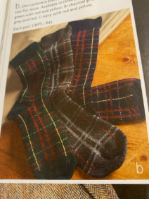 |
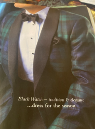 |
I first learned about tartans as a 5th grader in Cleveland, Ohio. At the Best & Co. store, my mother helped me pick out a new back-to-school dress (yes, we wore dresses in those days!). The dress had a Peter Pan collar and was made of a Black Watch plaid cotton fabric. I loved that dress, and the Black Watch tartan would be my favorite for years until I married into the McNeill clan (via the Richters).
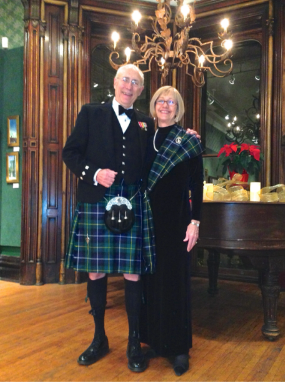
Tobin and Elizabeth Richter wearing the McNeill of Barra tartan